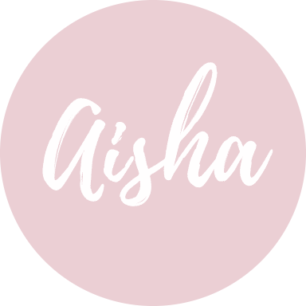

|  |
Aisha Mohammed TimtaHello Everyone, I'm Aisha, a 17 year old tech enthusiast with a passion for cybersecurity and web development. |
Student of Cybersecurity and Forensucs looking to gain experience and to apply my knowledge.
Responsibilities